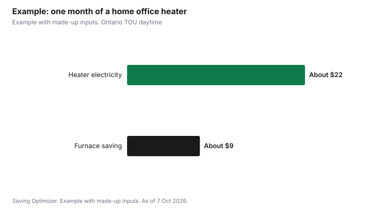

Utilities · Canada
Space Heaters in Canada: Hydro Cost per Hour, Safety, and When They Beat Turning Up the Furnace
A typical plug-in space heater on its high setting uses about 1.5 kWh of electricity per hour if it is rated 1,500 W. In Ontario, at the Ontario Energy Board's current Time-of-Use prices, that is about 15 cents an hour off-peak and about 30 cents an hour on-peak, for the electricity alone. A space heater beats the furnace only when you heat one room and turn the thermostat down for the rest of the house. If you run a heater while the furnace keeps the whole house at the same temperature, you pay for both. Use the formula below with your own utility's price, and follow the safety rules: at least 1 metre from anything that can burn, and never on an extension cord or power bar.
Key takeaways
- Cost per hour = watts / 1,000 x price per kWh.
- A 1,500 W heater uses 1.5 kWh an hour on high.
- Ontario TOU: about 14.7 cents an hour off-peak, 30.5 cents on-peak (electricity price only).
- It saves money only if the thermostat goes down for the rest of the house.
- Health Canada: 1 metre clearance, no extension cords or power bars, unplug when you leave or sleep.
- Example with made-up inputs: a home office heater vs a warmer house.
The formula for any province
Electricity is billed in kilowatt-hours (kWh). Divide the heater's wattage by 1,000 to get kilowatts, multiply by the hours it runs, then multiply by your price per kWh. A 1,500 W heater running for one hour uses 1.5 kWh. A 750 W setting uses 0.75 kWh. The wattage is printed on the label or in the manual. Heaters with a thermostat cycle on and off once the room is warm, so real use is often lower than the maximum.
Use the energy price on your own bill or your utility's rate page. In Ontario, the regulated prices come from the Ontario Energy Board. Hydro-Québec, BC Hydro and other utilities publish their own rates, often with tiers that charge more after a set amount of use.
What it costs per hour in Ontario
The table uses the prices the Ontario Energy Board set for 1 November 2025, which its rate page still shows as current. These are electricity prices only. Your bill also includes delivery, regulatory charges and HST, less the Ontario Electricity Rebate, so the full cost per kWh is higher than the price shown.
| Price plan and period | Price per kWh | Cost per hour (1.5 kWh) |
|---|---|---|
| TOU off-peak (winter: weekdays 7 p.m. to 7 a.m., weekends and holidays) | 9.8 cents | 14.7 cents |
| TOU mid-peak (winter: weekdays 11 a.m. to 5 p.m.) | 15.7 cents | 23.6 cents |
| TOU on-peak (winter: weekdays 7 to 11 a.m. and 5 to 7 p.m.) | 20.3 cents | 30.5 cents |
| ULO overnight (every day 11 p.m. to 7 a.m.) | 3.9 cents | 5.9 cents |
| ULO on-peak (weekdays 4 to 9 p.m.) | 39.1 cents | 58.7 cents |
| Tiered, tier 1 (first 1,000 kWh a month in winter) | 12.0 cents | 18.0 cents |
| Tiered, tier 2 (above 1,000 kWh a month in winter) | 14.2 cents | 21.3 cents |
Timing matters most on the Ultra-Low Overnight plan, where the on-peak price is ten times the overnight price. If you heat a bedroom overnight, ULO is cheap; if you heat a home office from 4 to 9 p.m. on weekdays, it is the most expensive option. Our guide to switching your Ontario price plan explains how to choose.
When a space heater beats the furnace
A space heater makes sense as zone heating: you warm the room you are using and let the rest of the house cool. Natural Resources Canada says a drop of 1°C over an eight-hour period can save about 2% of heating energy, and advises not going below 17°C because of the risk of moisture build-up in exterior walls. So the saving comes from the thermostat, not from the heater.
- Likely to save: one person working from home in one room, with the thermostat lowered a few degrees for the day.
- Likely to save: a cold bedroom overnight on a cheap overnight rate, with the rest of the house set back.
- Unlikely to save: running a heater in a room while the furnace keeps the whole house at the same temperature.
- Unlikely to save: heating a large, drafty room for many hours on a high peak rate.
- Fix the cause first: a cold room often has drafts, poor insulation or a blocked vent. See cutting the winter heating bill.
Homes heated with electric baseboards are different: a baseboard and a plug-in heater both turn electricity into heat, so moving heat to the room you use with baseboard thermostats can do the same job without a new appliance. See cutting electric baseboard costs.
Safety rules that matter
- Health Canada says to keep portable electric heaters at least 1 metre away from combustible materials such as couches, beds, clothes and curtains.
- Never plug a portable heater into an extension cord or power bar; plug it directly into a wall outlet, as Health Canada and the Electrical Safety Authority advise.
- Unplug it before you leave home or go to sleep, as Health Canada advises.
- Buy a heater with a recognized Canadian approval mark from an accredited certification agency, which the ESA says shows it was tested to the required safety standards.
- Choose a model with tip-over and overheat shut-off, and keep it out of walkways where people could trip on the cord.
- Quebec's fire safety page adds that a heater should not be used permanently; if you need one every day, consider a proper heating fix.
Types of heaters
Fan heaters warm a room quickly. Oil-filled radiators heat more slowly but hold heat after they cycle off. Ceramic heaters are compact. Radiant or infrared heaters warm people and objects in front of them, which suits a desk. All plug-in electric heaters turn nearly all the electricity they use into heat, so a higher price does not mean cheaper running. Pay for features you will use, such as a thermostat and timer, rather than claims about efficiency.
Example product on Amazon.ca. Saving Optimizer may earn a commission from Amazon.ca purchases made through this link. This is an example listing, not a ranking or a recommendation to buy: Amazon Basics ceramic heater with tip-over shut-off. No price is quoted here. Check the listing for the wattage and a recognized Canadian approval mark, then run the wattage through the formula above at your own price per kWh.
A note on humidifiers
A humidifier is not a heater, and adding one will not lower your heating bill by itself. If you use one in winter, clean it as the manufacturer directs, because standing water can grow mould and bacteria, and watch for condensation on windows, which can mean the air is too humid. Our winter dry skin guide covers cheaper ways to handle dry air.
Example with made-up inputs
These numbers are an example with made-up inputs. A person works from home in a small office, weekdays from 9 a.m. to 5 p.m., on Ontario Time-of-Use. They lower the furnace thermostat from 21°C to 18°C for those hours and run a 1,500 W heater about half the time, or four hours a day. The heater uses 6 kWh a day; at the mid-peak and on-peak prices in this example, about 17 cents a kWh on average, that is about $1.02 a day, or about $22 over 22 workdays. If, in this example, the household's heating cost for those hours is $60 a month and the setback cuts it by 15%, the furnace saves about $9. Here the heater costs more than it saves, and lowering the thermostat by only 1°C or 2°C with a warm sweater would be cheaper.
| Item | Amount |
|---|---|
| Heater use | 4 hours a day x 22 workdays = 88 hours |
| Electricity used | 132 kWh |
| Cost at about 17 cents a kWh | About $22 |
| Furnace saving from a 3°C daytime setback | About $9 |
| Net result | About $13 more |

The result flips when the heated room is small and the rest of the house is large, when the setback is long, or when electricity is cheap at the hours you use it. Run your own numbers with your bill.
Common mistakes
- Running a heater without lowering the main thermostat.
- Using an extension cord or power bar.
- Leaving a heater on when you go out or to sleep.
- Heating a drafty room instead of sealing the drafts.
- Ignoring peak prices on a time-of-use or ultra-low overnight plan.
Sources
- Ontario Energy Board, Electricity rates (TOU, ULO and Tiered prices set for 1 November 2025; winter tier threshold 1,000 kWh), oeb.ca, as of 7 Oct 2026.
- Natural Resources Canada, Keeping the Heat In, Section 9 (about 2% per 1°C over eight hours; 17°C), natural-resources.canada.ca, as of 7 Oct 2026.
- Health Canada, Electrical product safety: portable electric heaters (1 metre; no extension cords or power bars; unplug), canada.ca, as of 7 Oct 2026.
- Electrical Safety Authority, Indoor safety: portable space heaters (recognized Canadian approval mark; plug into a wall outlet), esasafe.com, as of 7 Oct 2026.
- Gouvernement du Québec, Protecting against fire hazards when using electric heating, quebec.ca, last updated 12 Feb 2026, as of 7 Oct 2026.
- Usage, setback savings and heating costs in the worked example are made-up inputs.
Frequently asked questions
How much does a space heater cost per hour in Ontario?
A 1,500 W heater on high uses 1.5 kWh an hour. At the Ontario Energy Board's Time-of-Use prices, that is about 14.7 cents off-peak, 23.6 cents mid-peak and 30.5 cents on-peak, for electricity only, before delivery, regulatory charges and HST.
Is a space heater cheaper than the furnace?
Only if you lower the thermostat for the rest of the house and heat one small room. Running a heater while the furnace heats the whole house costs more.
How do I calculate space heater cost?
Divide the wattage by 1,000, multiply by the hours it runs, then multiply by your price per kWh.
Can I plug a space heater into a power bar?
No. Health Canada says never to plug a portable electric heater into an extension cord or power bar.
How far should a space heater be from furniture?
Health Canada says at least 1 metre from combustible materials such as couches, beds, clothes and curtains.
When is the cheapest time to run a space heater in Ontario?
On the Ultra-Low Overnight plan, 11 p.m. to 7 a.m. is 3.9 cents a kWh. On Time-of-Use, off-peak is 9.8 cents a kWh on weekday evenings, overnight, weekends and holidays.
Researched and drafted with AI assistance and fact-checked against official Canadian sources. How we create content.
Disclosure: This page contains Amazon.ca affiliate links, each disclosed where it appears. As an Amazon Associate, Saving Optimizer earns from qualifying purchases. Saving Optimizer may earn a commission from Amazon.ca purchases made through those links. The products shown are examples, not a ranking, and the links do not change the arithmetic on this page. Education only.